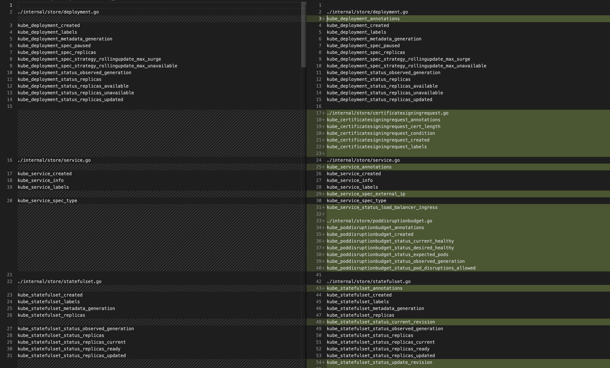
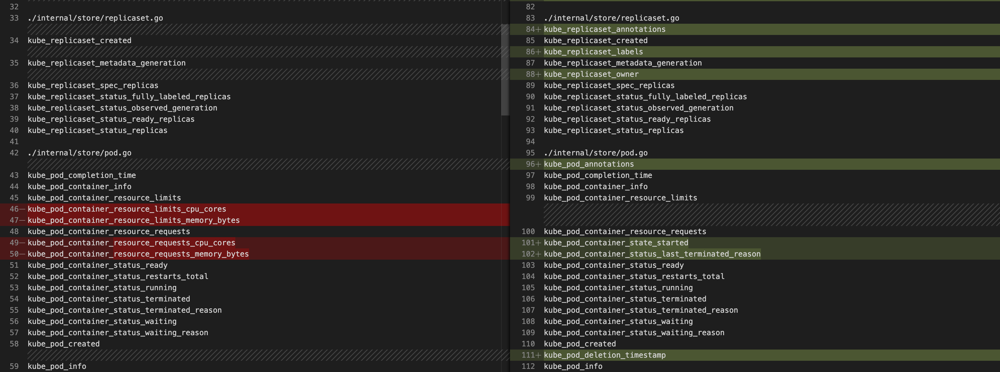

Programming, robotics, traveling
After updating at my work Kubernetes cluster and updating Prometheus Operator, was updated its component – kube-state-metrics to 2.3.0. Early when vesrions were used 1.4.0 and 1.7.0, there is no problem because it is back compitable. But since 2.0.0 was deleted some metric. And I need to discover this, because some of them was used in alerts!
For that I wrote 3 scripts:
#! /bin/bash
PATH_TO_CODE="./pkg/collectors"
WORD_TO_FIND="prometheus.NewDesc("
for file in `find ${PATH_TO_CODE} -type f -name "*.go" -not -path "*_test*"`; do
list=$(cat $file | grep -n "${WORD_TO_FIND}" | awk -F':' '{print $1+1}')
if [ ! -z "$list" ]; then
echo -e "\n$file" | sed 's/pkg\/collectors/internal\/store/'
new_list=()
for line in $(echo $list); do
metric=$(cat $file | awk "(NR == $line)" | xargs echo | awk -F ',' '{print $1}')
if [[ "$metric" =~ "desc" ]]; then
metric=$(cat $file | grep "$metric.*=" | awk -F "=" '{print $2}' | xargs echo)
fi
new_list+=($metric)
done
IFS=$'\n' sorted=($(sort -u <<<"${new_list[*]}")); unset IFS
for i in ${sorted[@]}; do echo $i; done
fi
done
Download metrics you can here.
#! /bin/bash
PATH_TO_CODE="./internal/store"
WORD_TO_FIND=" Name: "
for file in `find ${PATH_TO_CODE} -type f -name "*.go" -not -path "*_test*"`; do
list=$(cat $file | grep -n "${WORD_TO_FIND}" | awk -F':' '{print $1}')
if [ ! -z "$list" ]; then
echo -e "\n$file"
new_list=()
for line in $(echo $list); do
metric=$(cat $file | awk "(NR == $line)" | xargs echo | awk -F ',' '{print $1}' | awk -F ": " '{print $2}')
if [[ "$metric" =~ "desc" ]]; then
metric=$(cat $file | grep "$metric.*=" | awk -F "=" '{print $2}' | xargs echo)
fi
new_list+=($metric)
done
IFS=$'\n' sorted=($(sort -u <<<"${new_list[*]}")); unset IFS
for i in ${sorted[@]}; do echo $i; done
fi
done
Download metrics you can here.
#! /bin/bash
PATH_TO_CODE="./internal/store"
WORD_TO_FIND="*generator.NewFamilyGenerator("
for file in `find ${PATH_TO_CODE} -type f -name "*.go" -not -path "*_test*"`; do
list=$(cat $file | grep -n "${WORD_TO_FIND}" | awk -F':' '{print $1+1}')
if [ ! -z "$list" ]; then
echo -e "\n$file"
new_list=()
for line in $(echo $list); do
metric=$(cat $file | awk "(NR == $line)" | xargs echo | awk -F ',' '{print $1}')
if [[ "$metric" =~ "desc" ]]; then
metric=$(cat $file | grep "$metric.*=" | awk -F "=" '{print $2}' | xargs echo)
fi
new_list+=($metric)
done
IFS=$'\n' sorted=($(sort -u <<<"${new_list[*]}")); unset IFS
for i in ${sorted[@]}; do echo $i; done
fi
done
Download metrics you can here.
As I sad above 1.7.0 is back compitable to 1.4.0.

But 2.3.0 is not back compitable to 1.4.0.

Deleted metrics in 2.3.0 from 1.4.0
To grep a directory for broken alerts use next construction:
grep -nr \
-e kube_pod_container_resource_limits_cpu_cores \
-e kube_pod_container_resource_limits_memory_bytes \
-e kube_pod_container_resource_requests_cpu_cores \
-e kube_pod_container_resource_requests_memory_bytes \
-e kube_hpa_labels \
-e kube_hpa_metadata_generation \
-e kube_hpa_spec_max_replicas \
-e kube_hpa_spec_min_replicas \
-e kube_hpa_status_condition \
-e kube_hpa_status_current_replicas \
-e kube_hpa_status_desired_replicas \
-e kube_daemonset_updated_number_scheduled \
-e kube_node_status_allocatable_cpu_cores \
-e kube_node_status_allocatable_memory_bytes \
-e kube_node_status_allocatable_pods \
-e kube_node_status_capacity_cpu_cores \
-e kube_node_status_capacity_memory_bytes \
-e kube_node_status_capacity_pods \
-e kube_node_status_phase
Usually Grafana keeps dashboards in a database. If dashboard files exist Grafana loads these in the start time.
SERVER="https://grafana.example.com"
LOGIN=login
PASS=password
# Load list
# curl -H "Content-Type: application/json" -s "${SERVER}/api/search" -u ${LOGIN}:${PASS} | jq .
LIST=$(curl -H "Content-Type: application/json" -s "${SERVER}/api/search" -u ${LOGIN}:${PASS} | jq '.[].uri' | xargs -L1 echo | awk -F "/" '{print $2}')
# Save Dashboards to files
mkdir ./tmp
for i in $(echo ${LIST[@]}); do
echo $i
curl -H "Content-Type: application/json" -s "${SERVER}/api/dashboards/db/${i}" -u ${LOGIN}:${PASS} | jq . >> ./tmp/${i}.json
done
Based on serveradmin.ru.
After that can be used grep command that was defined above:
grep -nr ... > ./grafana-missed-metrics.txt
cat ./grafana-missed-metrics.txt | awk -F "./" '{print $2}' | awk -F ".json" '{print $1}' | sort -u
For example how to fix some metrics:
kube_pod_container_resource_requests_cpu_cores
kube_pod_container_resource_requests{resource="cpu"}
kube_pod_container_resource_limits_cpu_cores
kube_pod_container_resource_limits{resource="cpu"}
kube_pod_container_resource_requests_memory_bytes
kube_pod_container_resource_requests{resource="memory"}
kube_pod_container_resource_limits_memory_bytes
kube_pod_container_resource_limits{resource="memory"}